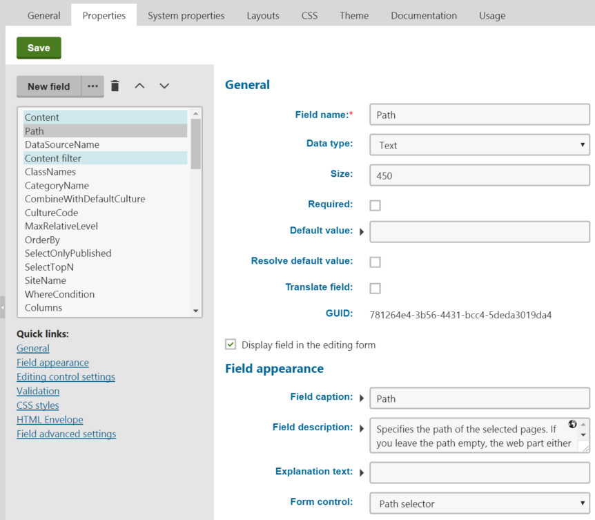

Working with web part properties
Properties allow web parts to cover a wide range of use cases and preferences. By using flexible web parts with properties, you do not need to create separate web parts for every specialized scenario.
The basic principle is the following:
Define a set of properties that affect the web part's behavior.
Configure the values of the properties for individual instances of the web part.
Handle the properties of the web parts in the code.
Defining properties for web parts
To set up the properties of a web part:
Open the Web parts application.
Select the web part in the tree.
Switch to the Properties tab.
Each property is represented by a field with its own name, data type, default value, and other settings. You can place the properties into categories. Categories make orientation easier when configuring web parts with a large number of properties. Each category includes the properties that are positioned below it in the field editor.

Editing the properties of the Repeater web part
Users can set the values of properties for individual web part instances in the Web part properties dialog, which opens when adding or configuring web parts in the Pages application.
Only properties whose Display field in the editing form box is checked are visible in the configuration dialog.
The editing interface of each visible property is provided by the selected Form control. Form controls allow you to choose from a large variety of built‑in field types, and provide almost unlimited customization options. See Assigning form controls to fields to learn more.
Securing web part properties with SQL values
When developing custom web parts with properties that allow users to input SQL code (Where conditions, Order by clauses or lists of Columns), we strongly recommend using the predefined Where condition, Order by or Columns form controls (instead of a standard text box). These form control provide protection against the possibility of privilege escalation.
See SQL code in web part properties for more information.
Inserting macros into the default values of properties
Properties use the Default value when users create new instances of the web part. If you wish to set a dynamic default value through macro expressions, you have two options:
Macros resolved when the page is displayed
For text-based properties, place the macro directly into the default value.
ORClick Edit value (
 ) next to the Default value, write the macro in the dialog, and leave the Resolve default value option disabled for the property.
) next to the Default value, write the macro in the dialog, and leave the Resolve default value option disabled for the property.
When users add instances of the web part, the macro remains unresolved in the web part properties dialog. If the user leaves the expression in the property's value, the system resolves the macro when processing the page containing the web part instance.
Macros resolved in the properties dialog
Click Edit value (
) next to the Default value, write the macro in the dialog, and enable the Resolve default value option for the property.
The system resolves the macro directly when opening the web part properties dialog.
Note
The Resolve default value check box only applies to macros added through the Edit value (
) dialog, and does not affect macros placed directly into the default values of text fields.
Handling properties in web part code
Every web part is based on a user control code file. Properties only affect the functionality of a web part if the code works with the property values.
Use the following methods to access the values of the web part's properties. These methods, along with others, are inherited from the CMSAbstractWebPart base class. The first parameter ("FieldName") must match the Field name of the property in Web parts -> Properties.
GetValue("FieldName");SetValue("FieldName", value);Note
The SetValue method does not permanently assign a value into the property configuration of web part instances. It only affects the functionality of the web part within the context of the processed web request.
Best practice
A good way to handle web part properties is to wrap them into public properties of the user control class that implements the web part. This approach:
Makes it easier to work with the value of the property in other parts of the code.
Allows developers to easily access the property if they add the web part user control into other components.
For example:
using CMS.Helpers;...// Public property that accesses the 'Path' web part propertypublic string Path{ get { return DataHelper.GetNotEmpty(GetValue("Path"), null); } set { SetValue("Path", value); // Assigns the value to an internal control inside the web part repeaterControl.Path = value; }}Accessing the properties of other web parts
You can use the API to create web parts that automatically adjust their behavior according to the configuration of other web parts or web part zones.
Note
The following code only works for web part instances and zones that are placed on the same page template as the web part whose code you are editing.
using CMS.PortalEngine.Web.UI;...// Gets an object representing the specified web part instance// The FindWebPart method accepts a string parameter containing the 'Web part control ID' of the required web part instanceCMSAbstractWebPart webpart = PagePlaceholder.FindWebPart("webPartId");// Gets an object representing the specified web part zone// The FindZone method accepts a string parameter containing the ZoneID of the required web part zone. You can find the IDs of zones in the template's page layout code.CMSWebPartZone zone = PagePlaceholder.FindZone(zoneId);Call the GetValue or SetValue methods of the CMSAbstractWebPart object to work with the properties of the retrieved web parts. The same applies to web part zones and CMSWebPartZone objects.
For example, the following code sets the value of the Web part container property based on the configuration of another web part:
using CMS.Helpers;...// Gets instances of two other web parts (from the same page template)CMSAbstractWebPart webpart1 = PagePlaceholder.FindWebPart("WebPart1");CMSAbstractWebPart webpart2 = PagePlaceholder.FindWebPart("WebPart2");// Gets the value of the Web part container property of 'WebPart1'string wp1Container = ValidationHelper.GetString(webpart1.GetValue("Container"), "");// Sets the Web part container property of the current web partthis.SetValue("Container", wp1Container);// Sets the Web part container property of 'Webpart2'webpart2.SetValue("Container", wp1Container);Tip
Create web part properties for storing the Web part control IDs of connected web parts. This allows you to specify the related web parts for individual instances.
Modifying the system properties of web parts
You can modify the settings of the System properties for individual web parts:
Open the Web parts application.
Edit (
 ) a web part.
) a web part.Switch to the System properties tab.
Tip
Click Reset field to revert all settings of a modified property back to the original state.
Reference - Web part system properties
The following tables describe the system properties of web parts. Some of the properties may not be available, depending on the Type of the web part. Additionally, the System properties tab does not contain properties that the web part overrides on the Properties tab.
|
Default |
|
|
Web part control ID |
Serves as an identifier for the web part. This ID must be unique within the context of each page template. The value may only contain alphanumeric characters and the underscore character ( _ ). Note: It is recommended to keep the IDs of web part instances short to minimize the overall size of the page output code. The Web part control ID is a critical system field and you cannot modify it on the System properties tab of the web part editing interface. |
|
Web part title |
Title that the system displays for the web part on the Design tab of the Pages application and in on-site editing mode. If empty, the web part uses the Web part control ID for this purpose. |
|
Visibility |
|
|
Visible |
If disabled, the web part does not display any content on the page or perform any functionality. |
|
Hide on subpages |
If checked, the web part does not appear on pages that inherit the web part from an ancestor page. |
|
Show for page types |
Determines which page types the web part is displayed on. If a page uses a page template containing the web part, but its type is not specified in this property, the web part does not appear on the page. Enter a list of page type code names separated by semicolons (;) or click Select. If empty, the web part is displayed on all page types. |
|
Display to roles |
Determines which roles are allowed to see the web part. You can use this property to implement pages with specific functionality for different types of users. Specify the roles as a list of code names separated by semicolons (;) or click Select roles. If empty, the web part is displayed to all users. |
|
Web part container |
|
|
Web part container |
Selects the web part container (box) that the system displays around the web part. |
|
Container title |
Sets a title for the container. You need to add the title into the code of the container through the {%ContainerTitle%} macro. |
|
Container CSS class |
Name of a CSS class applied to the container. You need to use the {%ContainerCSSClass%} macro as the value of an element's Class attribute in the code of the container. |
|
Container custom content |
Custom content that you can use to parameterize the container. Applied only if the {%ContainerCustomContent%} macro is used in the code of the container. |
|
Hide container on subpages |
If enabled, the container does not appear on pages that inherit the component from an ancestor page. For example, this allows you to add a container only for the master page. |
|
HTML Envelope |
|
|
Content before |
HTML content placed before the web part. Allows you to display a header or add encapsulating code, such as <div> or <table> elements. |
|
Content after |
HTML content placed after the web part. Allows you to display a footer or close tags from the Content before property. |
|
AJAX |
|
|
Use update panel ___________________________ |
If enabled, the system wraps the content of the web part into an AJAX UpdatePanel control. |
|
Time zones |
|
|
Time zone |
Specifies the type of time zone that the web part uses for its content. The following types are available:
|
|
Custom time zone |
Assigns a custom time zone specifically for the content of the web part. The web part uses the selected time zone regardless of the time zone settings of the website or user viewing the page. |
|
Performance |
|
|
Disable view state |
Indicates if view state is disabled for the web part. |
|
Disable macros |
If checked, the web part does not resolve macros entered into the values of properties. |
|
Partial cache minutes |
Sets the number of minutes for which system caches the output HTML code of the web part. Partial caching is similar to to full-page caching, but only for the code of the web part specifically. If left empty or set to 0, the web part does not use partial caching. Partial caching must also be allowed in the website's settings. Administrators can enable partial caching in Settings -> System -> Performance. |
|
Partial cache dependencies |
Allows you to specify a list of cache keys on which the partial cache of the web part depends. When the specified cache items change, the system clears the partial cache of the web part. Each line may only contain a single item. If you check Use default cache dependencies, the web part uses dependencies that include all possible object changes that could affect the given web part. See also: Setting cache dependencies |
|
Preserve partial cache on postback |
By default, the system clears the partial cache of web parts whenever a postback occurs on the page. If you enable this property, the partial cache of the given web part instance persists through postbacks. |
|
Output filter |
|
|
Filter output HTML of web part |
If checked, the output code generated by the web part is processed by the output filter according to the properties below. Allows you to filter the output of specific web part instances when the page is excluded from the output filter. The system always uses output filtering for web parts on pages that are not excluded through the website settings in Settings -> System -> Output filter. |
|
Resolve URLs |
Indicates if the output filter removes the "~" character in relative URLs and replaces it with the root URL of the website (including the application's virtual directory if applicable). |
|
Fix attributes |
If checked, the filter ensures that all attributes of HTML tags are in valid XHTML format. |
|
Fix Javascript |
If checked, the filter ensures that the type and language attributes are included in all <script> tags. |
|
Fix lower case |
If checked, the filter ensures that all HTML tags and attributes are in lower case. |
|
Fix self closing tags |
If checked, the filter ensures that all HTML elements without closing tags are properly closed. For example replaces <br> with <br />. |
|
Fix HTML5 |
If checked, the filter replaces attributes that are obsolete in HTML5 with CSS classes named in format <attribute name>_<attribute value>. These classes need to be defined in the CSS stylesheet used by the page or specific web part. The affected attributes are:
|
|
Convert TABLE tags to DIV tags |
If enabled, the filter converts <table> elements and their child <tr> and <td> tags to <div> elements with CSS classes assigned, named according to the replaced tag. These classes need to be defined in the CSS stylesheet used by the page or specific web part. |